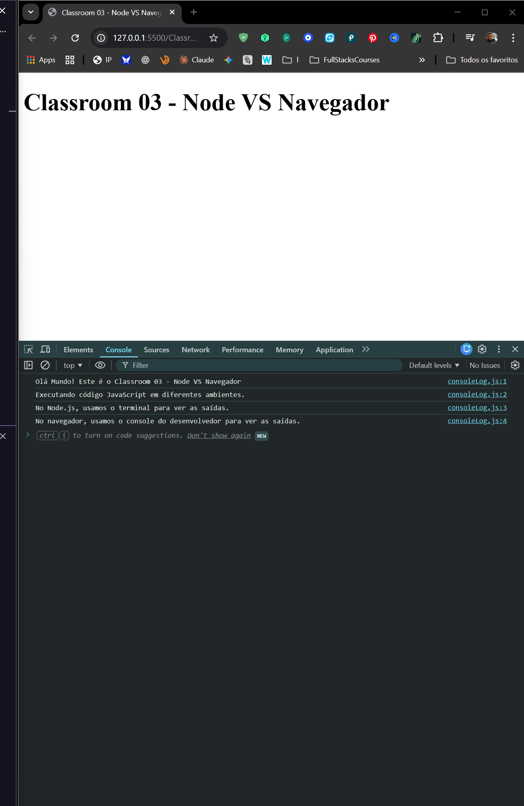
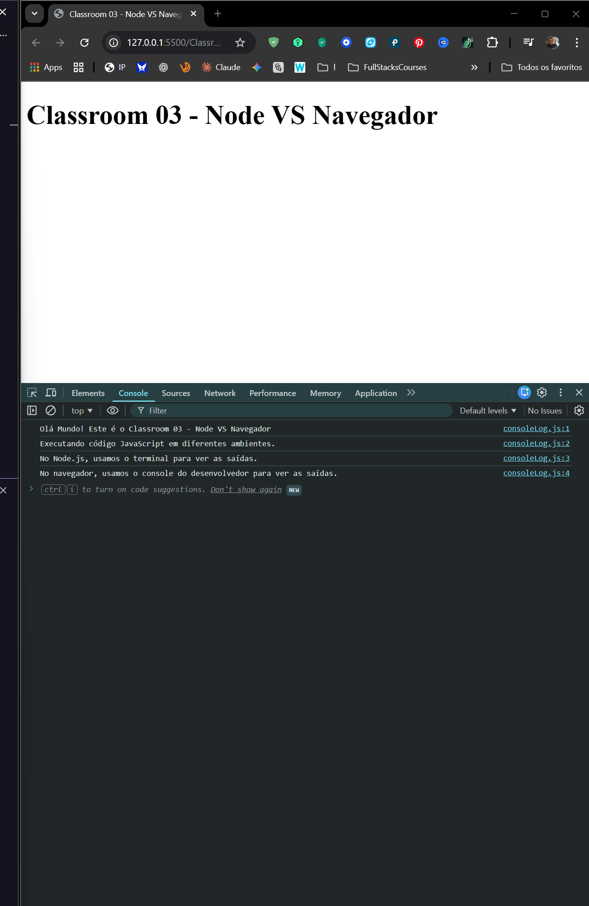

JavaScript em Ambientes Diferentes - Uma das primeiras coisas que precisamos entender é que o JavaScript pode rodar em lugares diferentes, e isso muda o que ele pode fazer. No Navegador (Chrome, Firefox), o JavaScript interage com a página web através do DOM (Document Object Model) e do objeto window. Já no Node.js, o JavaScript roda no servidor (ou no seu computador) e não tem acesso ao DOM ou janelas. Em vez disso, o Node usa o objeto global e tem acesso direto ao sistema de arquivos do computador e ao sistema operacional. Embora a sintaxe da linguagem (variáveis, funções, loops) seja a mesma, as ferramentas disponíveis ao redor dela mudam dependendo de onde o código está sendo executado.
 


// DIFERENÇAS ENTRE NODE E NAVEGADOR
console.log("Olá! Este comando funciona nos dois ambientes.");
// ---------------------------------------------------------
// NO NAVEGADOR (Browser)
// ---------------------------------------------------------
// O objeto global principal é o 'window'
// console.log(window); // Funciona no navegador, ERRO no Node.js
// Temos acesso ao DOM para manipular HTML
// document.querySelector('h1').style.color = 'blue'; // Funciona no navegador, ERRO no Node.js
// Podemos usar 'alert' para popups
// alert("Olá Mundo"); // Funciona no navegador, ERRO no Node.js
// ---------------------------------------------------------
// NO NODE.JS (Servidor/Computador)
// ---------------------------------------------------------
// O objeto global principal é o 'global'
// console.log(global); // Funciona no Node.js, ERRO no navegador
// Temos acesso a informações do processo rodando no computador
// console.log(process.version); // Mostra a versão do Node (ex: v18.16.0)
// Temos acesso ao sistema de arquivos (módulo 'fs')
// const fs = require('fs'); // Comum no Node.js para ler/criar arquivos
// ---------------------------------------------------------
// CONCLUSÃO
// ---------------------------------------------------------
// A linguagem é a mesma (JavaScript), mas o "ecossistema" muda.
// Navegador = Interface visual, HTML, Interação com usuário.
// Node.js = Servidor, Banco de dados, Arquivos, Sistema Operacional.